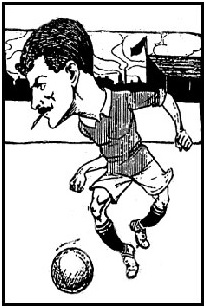
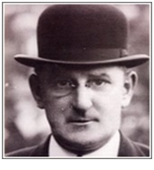

Chương 5

gày 28 tháng 6, 1914, diễn ra một sự kiện làm thay đổi thế giới: Franz Ferdinand, thái tử đế quốc Áo-Hung, bị ám sát tại Sarajevo, vương quốc Serbia. Áo-Hung trả thù, tấn công Serbia, khiến Serbia phải cầu Nga đến cứu.Sau đó, Đức và Thổ nhảy vào giúp Áo; Pháp và Anh xông ra giúp Nga. Chiến tranh thế giới thứ nhất (1914-1918) bùng nổ!
Thời ly loạn, vật lực cần được tập trung cho tiền tuyến, không thể phí tiền vào những trò thể thao như bóng đá.Cầu thủ được lệnh đá nốt cho xong mùa 1914-1915, sau đó các giải đấu sẽ bị đình chỉ vô thời hạn, cho đến khi nào chấm dứt chiến tranh.Trước tương lai bất định, một số cầu thủ Manchester United và Liverpool nảy sinh tâm lý muốn “hốt cú chót”. Họ móc ngoặc cùng nhau để lừa tiền nhà cái, bằng cách dàn xếp tỷ số trận cầu giữa hai CLB. Thế là ngày 2 tháng 4, 1915, người ta thấy Liverpool ra quân trên sân nhà, song lại đá…xìu xìu ển ển, để đội dưới cơ United thắng dễ 2-0. Nghi ngờ lập tức bùng nổ, và sau khi điều tra, FA ra án cấm đấu suốt đời giành cho 4 cầu thủ Liverpool và 3 cầu thủ United, gồm: Sandy Turnbull, Arthur Whalley, và Enoch West.
Lệnh cấm không ảnh hưởng nhiều, vì đằng nào sau tháng tư, cũng chẳng còn ai chơi bóng nữa.Hàng loạt cầu thủ United tình nguyện nhập ngũ, bỏ banh cầm súng bảo vệ quê hương. Họ đã chiến đấu dũng cảm, đã đổ máu trên chiến trường, và một trong số họ, Sandy Turnbull, đã hy sinh cho tổ quốc.
Sandy Turnbull là người ghi bàn duy nhất giúp United giành Cúp FA, cũng là người ghi bàn thắng đầu tiên trong lịch sử Old Trafford. Anh đăng ký nhập ngũ năm 1916, ban đầu phục vụ trung đoàn Middlesex, sau đó chuyển sang làm trung đội trưởng trong tiểu đoàn 8, trung đoàn East Surrey. Ngày 3 tháng 5, 1917, tiểu đoàn 8 tấn công quân Đức ở Chérisy, một ngôi làng nhỏ thuộc Arras, Pháp.Trong đợt xung phong đầu tiên, Turnbull trúng đạn vào chân.Sỹ quan chỉ huy ra lệnh đưa anh về chữa trị.
Còn nhớ trước trận chung kết Cúp FA năm 1909, Turnbull bị chấn thương, nhưng vẫn nằng nặc đòi ra sân. Lần này cũng vậy, vẫn với tinh thần rực lửa ấy, anh nhất quyết xin được ở lại chiến đấu đến cùng.Quân Anh lúc đầu thắng thế, nhưng rồi phải lui trước sự phản công mãnh liệt của đối phương. Tiểu đoàn 8 có 500 người thì 90 mất tích và tử trận, 175 bị thương, và 100 bị bắt làm tù binh. Không ai biết chuyện gì xảy ra với Turnbull, và đến nay, vẫn chưa tìm được xác anh nằm nơi đâu!
Sau cuộc chiến, án treo giò giành cho Turnbull được xóa. Arthur Whalley cũng được xỏ giày trở lại, do đã tòng quân, “lập công chuộc tội”. Chỉ riêng Enoch West vẫn bị cấm đấu, tuy anh cùng nhập ngũ với Whalley. Sở dĩ như thế là vì trong các cầu thủ “nhúng chàm”, West là người duy nhất không bao giờ nhận lỗi, chẳng những không nhận mà còn kiện FA ra tòa về tội vu cáo. Mãi đến năm 1945, FA mới xóa án cho West. Lúc ấy anh đã 59 tuổi!
Mùa bóng hòa bình đầu tiên, lượng khán giả đến sân Old Trafford tăng vọt so với thời tiền chiến. Lý do rất dễ hiểu: Người hâm mộ đã quá “đói” sau bốn năm phải nhịn bóng đá đỉnh cao. Trận đấu giữa United và Villa vào ngày 27 tháng 12, 1920 thu hút đến 70 504 khán giả. CĐVchen chúc nhau đến đổ cả hàng rào. Tuy vậy, khi cơn đói đã qua, dần dần người ta nhận ra rằng: United 1914 đã dở, United 1920 lại càng dở hơn!
Thật thế, United 1920 là một đội bóng què quặt. Trở về từ cuộc chiến, một số cầu thủ đã thành thương binh, không thể ra sân được nữa, số khác thì sau bốn năm đã chán bóng đá nên cũng bỏ nghề.Billy Meredith vẫn còn đó, song bắt đầu chán ngấy United, cương quyết đòi trở về với Manchester City, thi đấu dưới sự dẫn dắt của thầy cũ Ernest Mangnall. Thấy Meredith đã ngoài 40, CLB cũng không giữ, sẵn sàng bán anh cho City.
Nhưng Meredith là nhân vật cao ngạo ngất trời, anh muốn đi, chứ không muốn bị bán.“Tôi là con người”, Meredith nói, “không phải miếng thịt mà các ông mua đi bán lại”. Ngày xưa, Meredith đến United theo dạng chuyển nhượng tự do, nay anh cũng đòi được tự do ra đi. United đương nhiên không đồng ý: Sao lại có chuyện đem cầu thủ đi cho không City?
Buộc phải ở lại Old Trafford, Meredith phản đối bằng cách lãn công. Trong nhiều trận đấu, anh chẳng thèm theo bóng, cứ ngậm tăm đứng thơ thẩn bên đường biên. Chịu không thấu “ông thần ngông”, đến năm 1921, United đành nhượng bộ, để anh sang City miễn phí. Meredith chơi bóng tại Maine Road thêm 3 năm, đến hơn 49 tuổi mới giải nghệ.Xét về độ “trường thọ” trên sân cỏ, anh đứng hàng thứ hai trên thế giới, chỉ sau “Nam cực tiên ông” Stanley Matthews[1].

Biếm họa Billy Meredith, cây tăm luôn bên khóe miệng (Ảnh: Ru.wikipedia.org)
Dù có ở lại, Meredith cũng không ngăn nổi đà rơi tự do của United.Thành tích quá bê bết buộc HLV John Robson phải "bỏ của chạy lấy người".John Chapman lên thay, cũngkhông cứu nổi con thuyền đắm. Năm 1922, United một lần nữa rơi xuống Hạng Nhì.Không lạ gì khi người hâm mộ dần xa lánh CLB, mỗi trận cầu họ chơitrên sân nhàchỉ còn thu hút được độ chục ngàn khán giả. Ngay trong nội bộ đội bóngcũng nảy sinh chia rẽ: Cánh người Anh và cánh người Scotland không chơi với nhau, ra sân không chịu chuyền cho nhau.Thậm chí người ta còn lưu truyền tin đồn rằng có kẻ ghét United đã lén đem xác người chết chôn xuống dưới cầu môn Old Trafford. Muốn đội khỏi lận đận thì phải đào xác lên đem vứt đi…
Cầu thủ nổi danh nhất tại Old Trafford thời kỳ này là trung phong Joe Spence.Có thể nói, trong đội hình United, Spence đóng vai trò trung tâm.Nhiệm vụ của mọi cầu thủ khác là "chuyền bóng cho Joe", và nhiệm vụ của "Joe" là ghi bàn.Trong 14 năm khoác màu áo đỏ (1919-1933), Spence ghi được 168 bàn, nằm trong danh sách những tiền đạo lợi hại nhất mọi thời. Chỉ tiếc anh đến United đúng vàokỳ mạt vận, nên không giành được bất kỳ danh hiệu lớn nào.
Một mình Spence không thể gánh cả đội trên lưng,nên mọi người lại trông vào chủ tịch J.H. Davies, mong ông bơm thêm ngân khoản vực dậy CLB.Không may, Davies lúc này đã già, chỉ muốn “rửa tay gác kiếm”, không quan tâm đến chuyện bóng banh nữa. Ông qua đời ít năm sau đó.Tuy không còn túi tiền của Davies, các thành viên khác trong BLĐ cũng gắng gượng mở hầu bao, chi thêm cho HLV Chapman mua sắm.
Nói đến việc mua sắm của Chapman, không thể không kể chuyện ông mua tiền đạo Albert Pape.Ngày 7 tháng 2, 1925, Pape cùng Clapton Orient đến làm khách trên sân Old Trafford.Vừa đến nơi, lãnh đạo Orient bị Chapman kéo ngay vào văn phòng, đàm phán xin mua Pape.30 phút trước khi trận đấu diễn ra, thủ tục mua bán hoàn tất.Trong phòng thay đồ, các cầu thủ Orient không hiểu Pape biến đi đâu mất, tới khi ra sân mới ngã ngửa, phát hiện ra anh đang khoác áo United. Éo le hơn nữa, dù chưa kịp tập chung với đồng đội mới một buổi nào, Pape vẫn chơi rất hay, sút tung lưới đội bóng cũ, ghi bàn ngay trong trận ra mắt.
Nhưng phi vụ thành công nhất của Chapman là mua được Frank Barson vào năm 1922. United ra giá 5000 bảng cho Barson, Aston Villa đã đồng ý, song bản thân hậu vệ này lại chưa chịu đi. Anh chỉ chịu đến Manchester, với điều kiện CLB phải mua cho anh...một quán rượu thay cho phí lót tay: Đời cầu thủ ngắn ngủi lắm, phải lo xa chứ. Giải nghệ rồi còn có cái quán mà kiếm sống! Tuy vậy, 5000 + quán rượu vẫn là giá hời, bởi từ khi có Barson, hàng phòng ngự United vững vàng hơn hẳn.
Xuất thân thợ rèn, quen dùng dao búa, Barson nổi tiếng với lối chơi cứng rắn.Tiền đạo nào đến gần, anh "chém giò" ngay không thương tiếc. Thời đó chưa có thẻ vàng, thẻ đỏ, trọng tài cũng bắt rất nương tay, nên phong cách chặt chém của Barson có đất sống. Phong cách ấy dĩ nhiên chẳng đẹp đẽ gì, nhưng được cái hiệu quả. Hiệu quả chính là tiêu chí của Chapman: Đá có chán, có buồn ngủ cũng không sao, miễn giành điểm là được. Dưới trướng Chapman, United rất ít để lọt lưới, đồng thời ghi rất ít bàn.Thỉnh thoảng lắm mới thấy đội ghi hơn 2 bàn một trận.
Xét về thành quả đem lại, rõ ràng Chapman đã "đại công cáo thành". Năm 1925, United trở lại giải Hạng Nhất. Khán giả đến sân nhiều hơn, khiến doanh thu đội bóng tăng cao, trả được hết các món nợ cũ. Một năm sau đó, CLB vào bán kết Cúp FA, gặp Manchester City.Trong trận này, Frank Barson đánh nguội, làm Sam Cowan của City bất tỉnh.Trọng tài không thấy tình huống đấy, nhưng City khiếu nại lên ban tổ chức.Barson rốt cuộc bị treo giò hai tháng.
Trong hai thập niên 1920, 1930, bán kết FA là thành tích cao nhất Man đỏ đạt tới. Giữa lúc mọi chuyện đang đi đúng hướng, đùng một cái vào mùa thu 1926, FA ra thông báo, cáo buộc John Chapman "có hành vi thiếu chuẩn mực trên cương vị HLV". Manchester United cũng ngay lập tức sa thải ông. Việc Chapman bị sa thải là bí ẩn đến nay chưa có lời đáp. United không bao giờ giải thích nguyên nhân sa thải, FA không bao giờ nói rõ hành vi "thiếu chuẩn mực" là gì, và chính Chapman cũng không bao giờ hé môi nhắc lại chuyện cũ. Có người đoán Chapman dính líu đến nghi án dàn xếp tỷ số, nhưng phỏng đoán chỉ là phỏng đoán mà thôi.
United của Chapman tuy đá chán, song ít nhất vẫn ổn định. Chapman đi rồi, sự ổn định cũng đi theo.Tiền vệ Clarence Hilditch được đôn lên làm HLV kiêm cầu thủ một thời gian, trước khi bị thay thế bởi Herbert Bamlett. Bamlett chẳng phải ai xa lạ, chính là ông trọng tài năm nào bị rét cóng không thổi nổi còi, phải nhờ Charlie Roberts thổi giúp. Năm xưa Bamlett cóng vì tuyết lạnh, ngày nay cóng vì không tiền.Ông nhậm chức chưa lâu thì cuộc đại khủng hoảng kinh tế 1929 ập tới, cuốn theo nước Anh vào tâm bão. Biết bao nhà triệu phú chỉ qua một đêm, "bừng con mắt dậy thấy mình trắng tay", còn người nghèo đã nghèo lại càng thêm khổ.United cũng rơi vào cảnh khốn khó, có phần còn khó hơn các CLB khác. Để tồn tại, BLĐ CLB phải vay nợ tứ tung, vay xong không có tiền trả lãi, lại phải tìm người ta nài nỉ xin khất.
Giữa tình thế khó khăn trăm bề, phong độ cầu thủ không sao khá nổi. Mùa 1930-1931, United đá 12 trận mở màn, thua cả 12. Chỉ riêng 5 trận đầu, đội để lọt 25 bàn! “Manchester United là đội kém nhất giải VĐQG”, tờ Football Chronicle nhận định.

Hertbert Bamlett, trọng tài duy nhất từng dẫn dắt United (Ảnh: Worldrefree.com)
Chú thích:
[1]Theo lời Meredith, bí quyết “trường sinh” của anh là một loại thảo dược đặc biệt. Thảo dược ấy là gì thì anh “giấu nghề”, không tiết lộ.